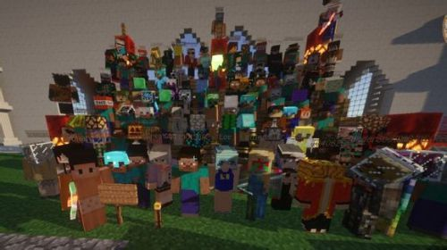

我的 第三大道
For My Third-Avenue
第三大道是一个 Minecraft 服务器的名字，建立于 2013 年 7 月 12 日，到现在已经有很多年的历史。从 1.5.2 版本到服务器关闭，一直保持并坚持公益模式，创造了高质量的纯净 Minecraft 游戏环境。
服务器开放的几年间，仅接受无偿捐助。本着精益求精的原则，资金全用于服务器维护，捐助者可以在服务器便捷菜单上留名纪念，不会给予权限，物品等实质性奖励。游戏内玩家人人平等，劳动创造财富，确保了玩家之间的公平。

一周目租赁的是淘宝弄的黑心服，满人20人，无任何插件，领地都没有，还一直爆满。一周目开了一周左右。因为要换领地插件，故更迭二周目。

二周目为 MOD 服。期间由于当年 MOD 服的不稳定，故使三道彻底放弃开设 MOD 服。
三周目转为原版生存插件服。三周目主城坐落于一片粉色羊毛（樱花）树林中，为主世界圈地插件生存模式。服内主要以玩家商店居多，还有一点点玩家村落，没到大型小镇地步。后因一次有组织的、大规模的，且性质极其恶劣的熊服后，服务器关闭并结束周目，连存档也没有被开放出来。

四周目为以地皮生存区为主、后期增加小游戏服、空岛/海岛生存服成为群组服。主城建筑以砂石、砂岩、石英为主，凯旋门为原型的建筑屹立在主城传送点。此周目是三道开服历史以来最大规模的周目，最大人数为 200 人的服务器人满为患，甚至需要排队才能游玩。服内玩家商店成为主流，到周目末期逐渐开始有玩家社区及小镇的雏形出现。后期因服务器性能原因，禁止了家园世界刷怪，改为统一刷怪塔。2015 年 2 月，因 BungeeCord 蹦极服配置失误，三道管理组羊驼（SunsetRiders）的账号被玩家非法登录，对服务器进行了大规模的破坏，被迫回档。数十天后，四周目宣布结束，并宣布五周目转型为正版服。
五周目重回主世界转型为正版服并更换了服主。原腐竹 GreatGBL 因个人原因退出对三道的管理，并将服务器转交给羊驼。五周目小镇逐渐发展壮大，同时也促成了各个小镇间的铁轨互通。一年之后，因 15 年服务器转交后，后台经不断处理后，仍不停的出现报错，同时服内也发展到了一定程度，故决定更换周目。
六周目对游戏版本进行了升级。六周目的主城是一个小海港。小镇在六周目进一步的壮大成为主导。六周目是开服时间最长的一个周目，周目后期因玩家的减少以及管理组的精力的原因，腐竹尝试与当时三道某玩家开的小服进行合并，初衷是让该玩家负责主持后台，羊驼负责前台管理。合并过程比较仓促，并没有对该玩家和其他玩家做到有效沟通，该玩家小服迁徙后仍然保留了原服规（禁止讨论三道等）招致部分玩家反对，合并进行了一周而作罢。三道继续以独立形式运营六周目，腐竹着手准备七周目。
七周目对游戏版本进行升级的同时，在一开始的设计中就是以群组服的形式搭建，七周目的主城依然坐落在一个港口。正式开服大批玩家涌入，服务器后台数据库无法处理，导致跨服游玩时数据不同步。可惜的是，当年并没有良好的解决方法，当时可行的解法需要停服，从头开始搭建传统服务端。拯救七周目的工作量，加上当时某脸熟玩家的熊孩子行为（利用主城搭建者身份私藏物品），成为压垮腐竹的最后一根稻草，最后腐竹决定停服。七周目成为了除测试性质的一周目之外最短命的周目。
创造服开放于三周目后四周目前，为过渡性质。
势力战争分服开放于六周目中后期，战争服因玩家过少且游戏前期流程过于枯燥漫长而宣告失败。
第三大道势力战争是第三大道的高难度生存分服。在这个分服中玩家主要的游戏模式是通过与其他玩家的互动，社交（pvp也是交流的一种）组建玩家军团和联盟。然后以这些玩家单位来占领领土，扩充人员。分服没有官方剧情，没有既定游戏流程，玩家间的合作与竞争将是本服的主要玩点，也是很多热门网游经久不衰的根本原因，希望势力战争分服也能像那些网游常青树一样一直保持活力。
七周目夭折后，服务器就一直没有再度开放过。2021 年，腐竹决定复活三道并且利用 16 年已完成的定制插件，开启势力战争分服，计划重启三道，筹划期间三道 BBS 社区站点也陆续开放，次年因定制插件仍然存在 BUG 且原作者已失联，战服重启失败，BBS 社区不久后也下线。三道再次进入休眠状态至今。
目前，三道玩家闲聊 QQ 群（738485913）仍然面向所有三道玩家开放，欢迎进来唠嗑。
https://shangjixin.github.io/disandadao/
https://space.bilibili.com/10080035/channel/seriesdetail?sid=1097425
https://www.bilibili.com/video/BV1vs411S7nB/
https://www.bilibili.com/video/BV1Cs411D7ws/
https://www.bilibili.com/video/BV1Gx41127nQ/
“我的第三大道”专题页不是第三大道管理组的官方站点，Minecraft 版权由 Mojang 及 Microsoft 所有。
有关于第三大道早期的内容已在互联网上不可寻，无从考证。本站此专题页谨以纪念第三大道服务器，本站不是该服务器的官方网站。
如果你也想加入进留住三道记忆的行动中来，想要补充内容，或报告错误，请联系本站站长。